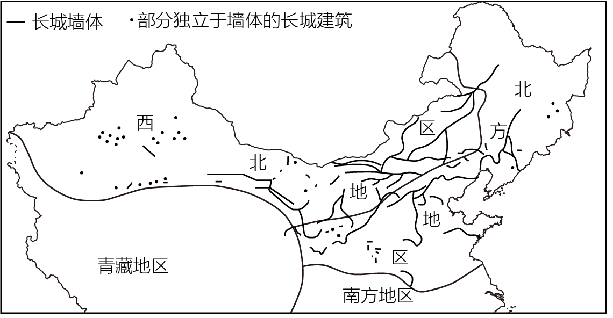
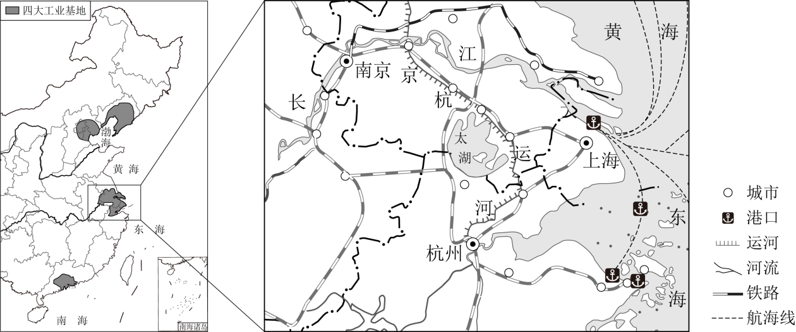

2023年北京市中考地理真题 · 选择题 第6、7、8、9、10题
分析降水量分布状况是认识区域差异的重要内容。图为中国年降水量分布和国地降水量柱状图。读图，完成下面小题。

6. 四地中（ ）
A. 甲地降水季节变化最大B. 乙地雨季最长
C. 丙地7月降水量最大D. 丁地年降水量最大
7. 乙地为（ ）
A. 乌鲁木齐B. 北京C. 武汉D. 广州
长城是我国现存规模最大的文化遗产。图为我国长城分布示意图。读图，完成下面小题。

8. 长城主要分布在（ ）
A. 北方地区和南方地区B. 南方地区和青藏地区
C. 西北地区和北方地区D. 西北地区和青藏地区
9. 在长城上可能看到的自然景观有（ ）
①沙漠②草原③大海④椰林
A. ①②③B. ①②④C. ①③④D. ②③④
10. 我国正 规划建设长城国家文化公园，这有助于（ ）
规划建设长城国家文化公园，这有助于（ ）
①恢复长城的军事防御功能②维护长城沿线地区生态环境
③保护长城沿线的文化遗址④了解我国多民族交融的历史
A. ①②③B. ①②④C. ①③④D. ②③④
长江三角洲地区对长江流域乃至全国具有辐射带动作用。图为长江三角洲地区简图。读图，完成下面小题。
